01
Community Engagement Walks
Door-to-door, footstep-by-footstep presence in border villages — turning suspicion into welcome over months of patient return visits.
Major Abhilasha Barak — India's first woman combat helicopter pilot, leading her country's first-ever UN Engagement Team along the Blue Line, Southern Lebanon.
She is a soldier, an aviator, and an advocate. Major Abhilasha Barak is the first woman combat helicopter pilot in the history of the Indian Army — and today she serves as Engagement Team Commander with INDBATT under the United Nations Interim Force in Lebanon, patrolling the Blue Line that separates Lebanon and Israel.
Her brief is unusual for a combat aviator. For one year she does not fly. Instead she walks into villages where peacekeepers were once unwelcome, sits with women in their kitchens and their classrooms, and rebuilds — day by day — a quiet, durable trust between a community and a blue beret.
She left the helicopter cockpit for a year — not out of necessity, but out of conviction.
The framework Major Abhilasha leads under as Commander of INDBATT's Engagement Team — the first of its kind from India deployed under a United Nations flag.
Door-to-door, footstep-by-footstep presence in border villages — turning suspicion into welcome over months of patient return visits.
Workshops on gender rights, child safety, mental health and civic literacy — delivered in schools, community halls and homes.
From candle-making and catering to computer literacy and accounting — skills that turn participants into earners and leaders.
Yoga, meditation, sport and self-defence sessions — for women, children and special-needs communities across the sector.
Walks for peace, language & food exchanges, and shared festivals — reframing peacekeeping as neighbourliness.
Not events. Not photo-ops. Standing institutions she conceived, raised funding for, and handed back to the community.
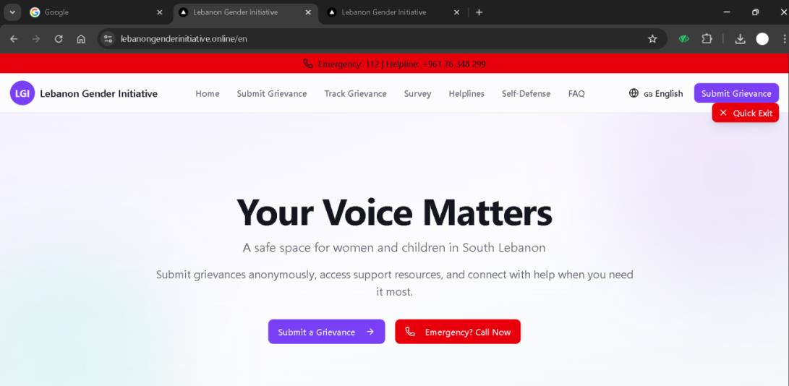
An AI-powered grievance and self-defence platform she built for women and children across South Lebanon — quietly, in the months between patrols.
The platform offers anonymous reporting of gender-based violence, a 24×7 helpline, and a multilingual self-defence training library.
Visit lebanongenderinitiative.online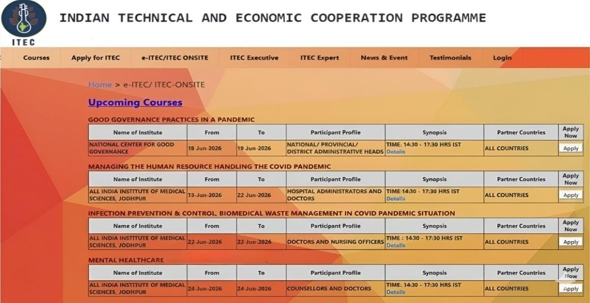
Working with the Government of India, she unlocked 75 fully funded ITEC programme seats for Lebanese women aged 25–45.
Disciplines spanning renewable energy, agri-entrepreneurship, accounting and banking — taught in India, on full scholarship, with the goal of a generation of qualified women returning home as anchors of the local economy.
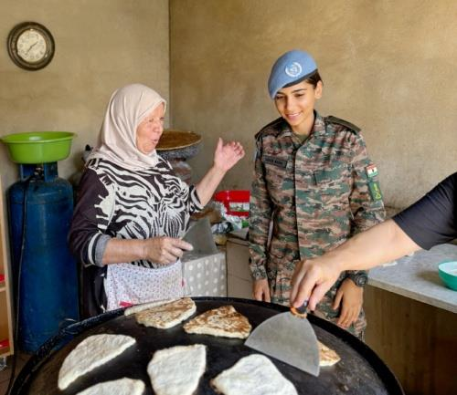
29 vocational programmes delivered in six months — and a measurable shift in who shows up to local markets, clinics and dental chairs.
Eleven recurring activities the Engagement Team has run across South Lebanon — shown here with placeholder images for the dossier photographs.
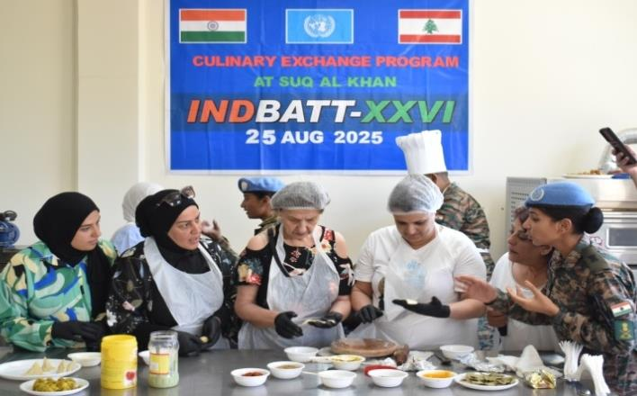
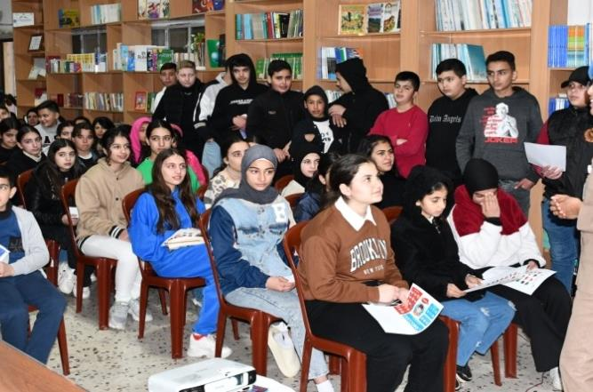
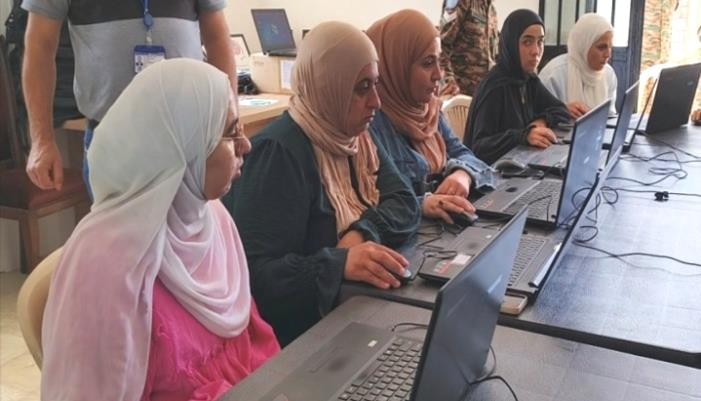
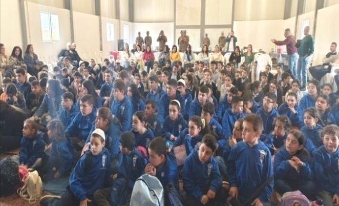
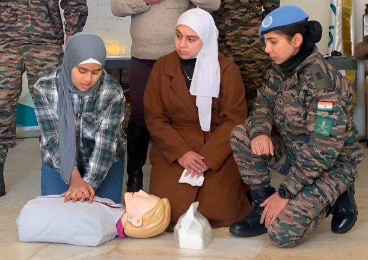
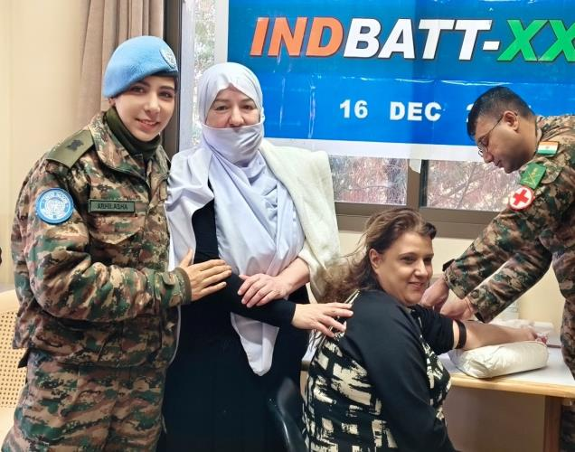
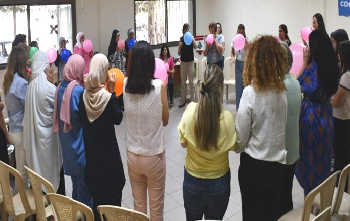
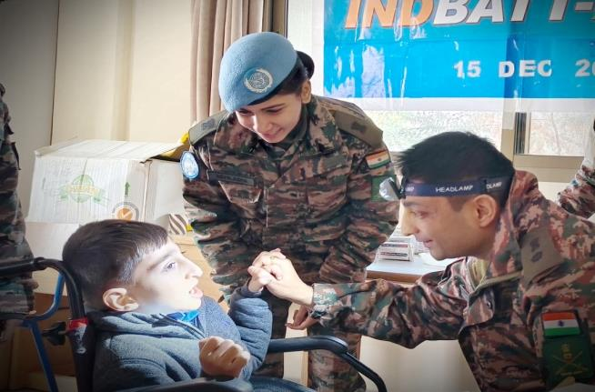
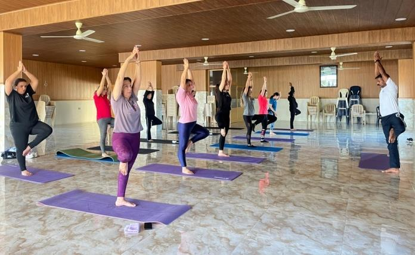
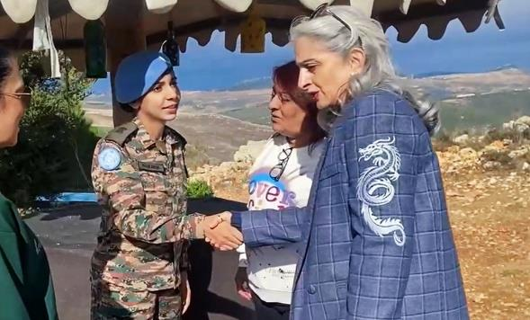
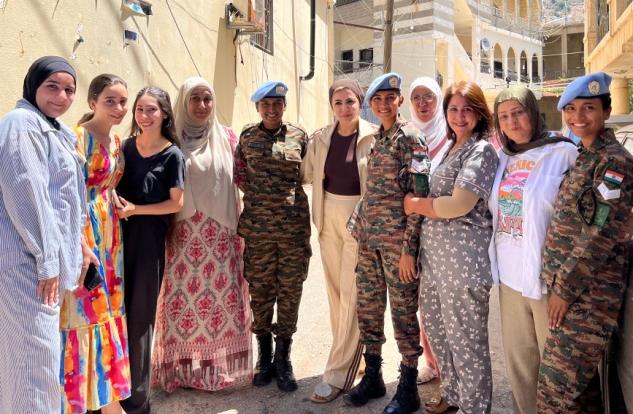
Two short films from the dossier — one a portrait of mission and command, the other a chorus of voices from the women of South Lebanon.
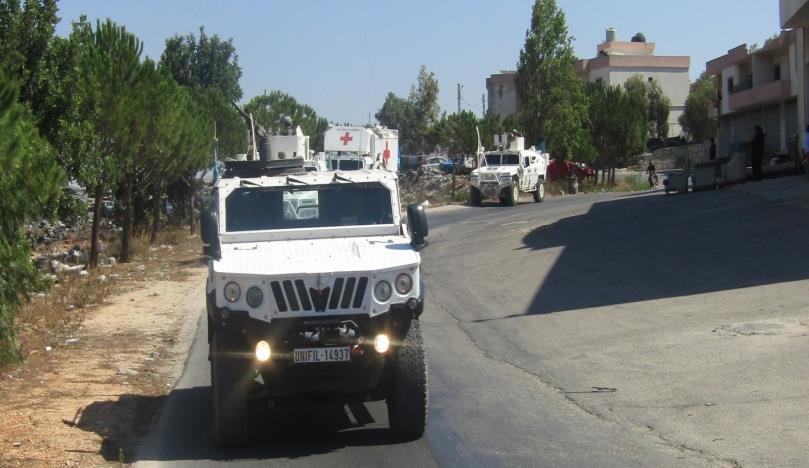
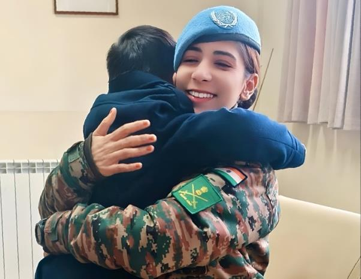
For years Alahmadiya was a no-go for UNIFIL patrols. Stones were thrown. Doors stayed shut. Then a Major in a blue beret began walking in alone, again and again, with nothing but conversation.
Today the patrols are regular. Children run alongside. Women host the Engagement Team in their homes. The change was not policy — it was patience.
After attending the candle-making workshop, I became confident and skilled. Today, I am empowered and proud to make candles for my neighborhood.Ms. Jocelyne · Vocational Training Participant, South Lebanon

"In recognition of her outstanding dedication, unwavering commitment, and valuable contributions to social work and community service…"
The certificate is one of dozens she has been issued by Lebanese civic bodies, schools, and community organisations across the area of operations — alongside her formal nomination for the United Nations Military Gender Advocate of the Year 2025.
She lost her mother at the age of seven. The grief sharpened, rather than softened, a sense that time is a thing one is given — and is therefore obliged to spend.
She would go on to become India's first woman combat helicopter pilot. The cockpit was a door that no woman had walked through before her, and once it opened it opened for everyone after her.
And then, with the door open and the rotor warm, she chose a year on the ground in Lebanon — to walk into other people's villages, to sit in other people's kitchens, to listen. Not because she had to. Because she believed she should.
The future is shaped by choices, not by gender.